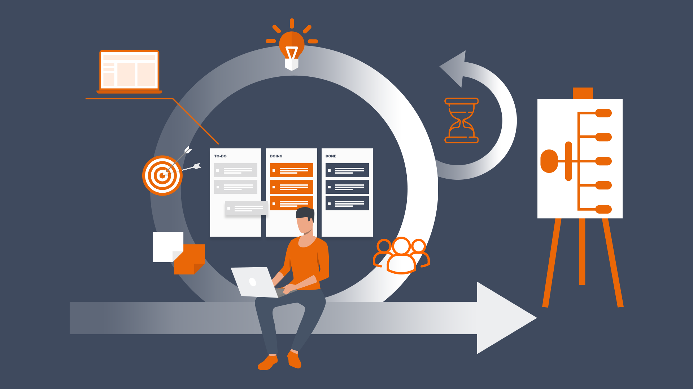

Agile
What is Agile?
History of creation

Values of Agile
- Individuals and interactions over processes and tools
- Working software over comprehensive documentation
- Customer collaboration over contract negotiation
- Responding to change over following a plan
Principles of Agile
- Satisfy the customer through early and continuous delivery
- Welcome changing requirements, even late in development
- Deliver working software frequently
- Business people and developers must work together daily throughout the project
- Build projects around motivated individuals
- Convey information to and within a development team is face-to-face conversation
- Working software is the primary measure of progress
- Agile processes promote sustainable development
- Continuous attention to technical excellence and good design enhances agility
- Simplicity - the art of maximizing the amount of work not done - is essential
- The best architectures, requirements, and designs emerge from self-organizing teams
- The team discusses how to become more effective
Advantages of Agile
- Continuous customer contact
- The ability to adapt
- Faster delivery
- Lower project risk
- Ongoing innovation
Iterations in Agile
Scrum
Agile Scrum is the most popular framework today
Agile Scrum team work process
- 1-2 week cycles (also known as “sprints”)
- Daily team meetings
- Reflection on the results of the sprint
- Quick feedback
- Continuous collaboration with the customer
Scrum roles and responsibilities
- Team lead (or Scrum master). Keep the team on track, plan and lead meetings, and work out any obstacles the team might face
- Development team. A development team is composed of professionals who do the hands-on work of completing the tasks in a Scrum sprint
- Product owner. Responsible for product vision and priorities
Different frameworks
Kanban
If Scrum is cyclical by nature, Kanban is a continuous process
Kanban workflow

How to implement Kanban
- Visualize the workflow
- Measure and manage the flow
- Restrict the work-in-progress (WIP)
- Make process policy clear
- Take every opportunity to improve
Kanban is ideal for continuous product support
Agile Scrum vs Kanban
Scrum:
- Supports incremental delivery
- Strictly separates responsibilities
- Divides the process into cycles
Kanban:
- Supports continuous delivery
- Less focused on “roles” and meetings
- Workflow-oriented, not cycle-oriented